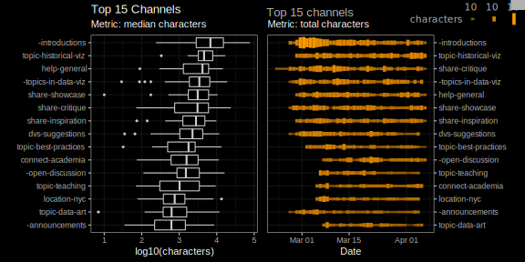
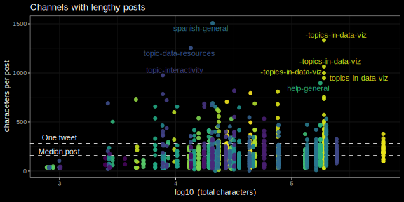

![]()
Show the code
library(tidyverse)
library(ggdark)
library(lubridate)This post is made as a backup for the data visualization challenge number 2. Data comes from the daily posts of the members of the Data Visualization Society (DVS) on the DVS Slack channels. You can see everybody’s submissions for the challenge here.
I am also very motivated to explore the dark versions of the ggplot themes. The package I’m going to be using is called ggdark.
These are the libraries we’ll need:
library(tidyverse)
library(ggdark)
library(lubridate)We read the data from the repository.
df <- read_csv("https://raw.githubusercontent.com/data-visualization-society/datavizsociety/master/challenge_data/dvs_challenge_2_channel_topics_over_time/flattened_channel_data.csv")Let’s perform some summary stats. There’s 62 channels, but I will focus on the top 15 channels as ranked by their total volume of characters. I’m using this metric because the correlation between characters and the number of posts is, naturally, good.
ggplot(df, aes(posts+responses, characters))+
geom_smooth(method = "lm", se=FALSE, lty=2)+
geom_point(alpha=0.4)+
dark_theme_bw()+
scale_y_continuous(labels = scales::label_number_si())
Summary.
sum_df <- df %>% group_by(channel) %>%
summarise(total_channel = sum(characters),
median_channel = median(characters)) %>%
top_n(15, wt = total_channel) %>%
arrange(desc(total_channel))Modify the original data and do some stats.
df <- df %>% group_by(channel) %>%
mutate(total_channel = sum(characters),
median_channel = median(characters),
char_per_ping = characters/(posts+responses)) %>%
ungroup() %>%
group_by(date) %>%
mutate(daily_flow = sum(characters),
daily_posts = sum(posts+responses))%>%
ungroup()The idea behind the first pair of plots is to see the sheer amount of volume on certain channels.
A good way of seeing how the top channels are ordered according to output is to do an ordered boxplot.
top_box <- df %>%
filter(channel %in% unique(sum_df$channel)) %>%
mutate(channel=fct_reorder(factor(channel), median_channel)) %>%
ggplot(aes(channel, log10(characters)))+
geom_boxplot()+
coord_flip()+
dark_theme_bw()+
labs(x="")+
ggtitle(sprintf("Top %s Channels",
length(unique(sum_df$channel))),
"Metric: median characters")I’m also curious about how persistent in time the flow is.
wave <- df %>%
filter(channel %in% unique(sum_df$channel)) %>%
mutate(channel=fct_reorder(factor(channel), total_channel)) %>%
ggplot(aes(date, channel, color=log10(characters))) +
geom_line(aes(lwd=characters))+
dark_theme_bw()+
labs(y = "", x="Date")+
guides(color = FALSE)+
scale_color_gradient(low = "#613A00", high="#FA9800")+
ggtitle("Top 15 channels",
"Metric: total characters")+
scale_y_discrete(position = "right")+
theme(legend.position = "none")We put everything together with the cowplot package.
cowplot::plot_grid(top_box, wave)
# Save the plot
#ggsave("box_wave.svg", width = 8, height = 4, units = "in", dpi="retina")I later modified this output a bit using Inkscape.

While most of the channels have a low median, even below a full tweet, it looks like some channels tend to have very lengthy posts.
# Calculate median
median_post <- median(
df$characters/(df$posts +df$responses))
# Do the plot
lengthy <- ggplot(df, aes(log10(total_channel),
char_per_ping))+
dark_theme_bw()+
geom_hline(yintercept = 280, lty=2)+
geom_hline(yintercept = median(
df$characters/(df$posts +df$responses)), lty=2)+
annotate("text", x = 3, y= c(200, 340), label=c("Median post",
"One tweet"))+
geom_point(aes(color=channel), alpha=0.9)+
scale_color_viridis_d(direction = -1)+
theme(legend.position = "none")+
ggrepel::geom_text_repel(data=filter(df,
char_per_ping > 850),
aes(label = channel, color=channel))+
labs(x=bquote(
log10 ~"(total characters)"),
y="characeters per post")+
ggtitle("Channels with lengthy posts")
# Save
# ggsave("lengthy.svg", width = 8, height = 4, units = "in",dpi="retina")
Because everything is seasonal, let’s analyze by days of the week. Seems like Tuesday to Thursday are the days with most movement, waning down on Friday and into the weekend.
ggplot(df, aes(wday(date, label=TRUE, abbr = TRUE, week_start = 1),
daily_posts))+
geom_line(color="gray80")+
stat_summary(geom = "point",
fun = median, size=2.5)+
dark_theme_bw()+
labs(x="", y="Number of daily posts",
title = "Weekly post variations",
subtitle = "Points represent median daily post.\nLines show full data range.")
# ggsave(filename= "weekly_vars.svg", width = 8, height = 6 , dpi="retina")@online{andina2019,
author = {Andina, Matias},
title = {Data {Visualization} {Challenge} 2},
date = {2019-04-14},
url = {https://matiasandina.netlify.app/posts/2019-04-14-data-visualization-challenge-2/},
langid = {en}
}
I'm so glad you're here. As you know, I create a blend of fiction, non-fiction, open-source software, and generative art - all of which I provide for free.
Creating quality content takes a lot of time and effort, and your support would mean the world to me. It would empower me to continue sharing my work and keep everything accessible for everyone.
There easy ways to contribute. You can buy me coffee, become a patron on Patreon, or make a donation via PayPal. Every bit helps to keep the creative juices flowing.
Not in a position to contribute financially? No problem! Sharing my work with others also goes a long way. You can use the following links to share this post on your social media.
Please note that some of the links above might be affiliate links. At no additional cost to you, I will earn a commission if you decide to make a purchase.
© CC-By Matias Andina, 2023 | This page is built with ❤️ and Quarto.